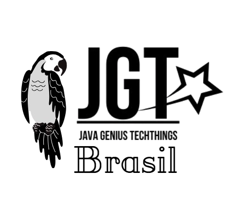
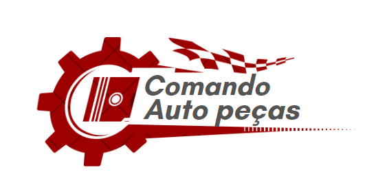
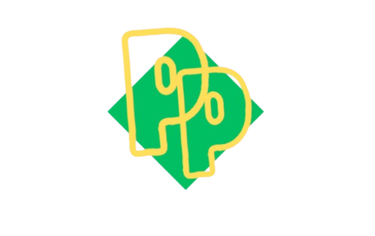

A JGT foi fundada pelos alunos do SESI-SENAI com o objetivo de digitalizar e aprimorar todas as necessidades das pessoas. Nossa missão é tornar a praticidade algo do cotidiano, sem deixar de lado assuntos importantes como a saúde mental.
Motivação da Criação do Site

A criação de um site sobre a favelização do Brasil é uma maneira eficaz de abordar um fenômeno social complexo e de grande importância para o país. questões como desigualdade social, pobreza, acesso à moradia e políticas públicas ineficazes. Ao criar uma plataforma digital dedicada ao tema, é possível dar visibilidade a essas questões, sensibilizar a sociedade e estimular um debate mais amplo sobre a situação dos moradores de favelas e a urbanização das grandes cidades brasileiras. O site pode servir como um meio de disseminação de informações sobre a origem, a dinâmica e as consequências desse processo para as comunidades afetadas, além de promover um espaço de reflexão sobre as soluções possíveis para melhorar as condições de vida nessas áreas.O site pode ser também um ponto de encontro para discutir diferentes perspectivas sobre o assunto, reunir histórias de moradores de favelas e especialistas em urbanismo, e até mesmo exibir dados atualizados sobre a evolução das favelas no Brasil, promovendo uma compreensão mais clara das causas e consequências desse fenômeno. Em última instância, um site dedicado à favelização pode criar uma rede de apoio, gerar novas ideias e inspirar ações concretas para enfrentar os desafios relacionados a essa realidade. A visibilidade e o diálogo proporcionados por um projeto digital têm o poder de transformar a percepção pública e pressionar por mudanças significativas
N-CASH
A N-Cash é o primeiro banco online anônimo da JGT | Brasil, lançado em 2024, trazendo uma plataforma inovadora, segura e discreta para gestão financeira no mundo digital. Com foco em privacidade, facilidade e tecnologia de ponta, oferecemos soluções que garantem total controle e confiança em suas transações financeiras, permitindo liberdade econômica no ambiente digital. Nossa missão é transformar o mercado financeiro, tornando-o mais acessível, seguro e adaptado às necessidades do futuro, garantindo uma experiência única e confiável para nossos usuários.
TWB
A Tech Well Being (TWB) é uma plataforma inovadora desenvolvida por nossa equipe para transformar a forma como as pessoas lidam com questões de saúde mental. Utilizando tecnologias de ponta, como a realidade virtual, a TWB oferece ferramentas interativas para combater fobias de maneira segura e eficiente, permitindo que os usuários enfrentem seus medos em ambientes controlados e realistas. Além disso, disponibilizamos serviços terapêuticos online com profissionais qualificados, garantindo acessibilidade, conveniência e um suporte personalizado para cada necessidade. Nosso objetivo é democratizar o acesso à saúde mental, tornando-a prática, tecnológica e ao alcance de todos.
.png)
Outro projeto de destaque desenvolvido por nossa equipe é o COMANDO ALTO PEÇAS, um portal completo para quem busca soluções automotivas em um único lugar. O site oferece uma ampla variedade de serviços, incluindo a venda de peças de carro com alta qualidade e procedência, uma rede de mecânicos confiáveis para manutenção e reparos, e uma seção dedicada à compra e venda de veículos usados ou novos, atendendo diferentes necessidades e orçamentos. Além disso, para os apaixonados por automobilismo, disponibilizamos uma área exclusiva, conectando entusiastas ao universo automobilistico. O COMANDO ALTO PEÇAS é a solução ideal para quem busca praticidade, confiança e informações em um só lugar.
País das Palavras
Esse projeto foi criado com o objetivo de incentivar o aprendizado e o aprofundamento nos temas da Língua Portuguesa, oferecendo uma plataforma acessível para todos que desejam expandir seus conhecimentos. Com uma ampla variedade de exercícios interativos, o projeto abrange não apenas a variante brasileira da língua, mas também o português europeu, promovendo um estudo completo e inclusivo. A iniciativa busca apoiar estudantes, professores e qualquer pessoa interessada em aprimorar suas habilidades linguísticas, criando um espaço rico em conteúdo e possibilidades educativas.
A EQUIPE DOS ESTUDANTES DO SESI-SENAI
CAIO FERNANDO FARIA DO AMARAL
FELLIPE OLIVEIRA RASZEJAS
JULIO CESAR DA SILVA MORAES
NICOLLE ALBUQUERQUE GONÇALVES
RUDRIAN ALMEIDA DOMINGUES